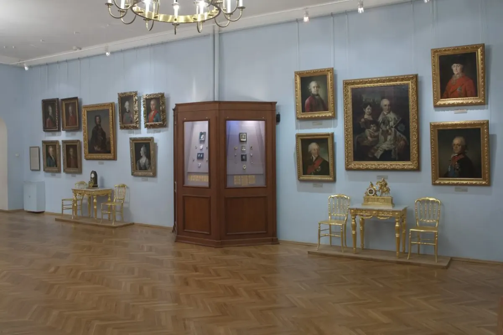

| Название | Описание | Цена |
|---|---|---|
| Историческое наследие Великого Новгорода | В этой экскурсии вы погрузитесь в историческое прошлое Великого Новгорода, одного из древнейших городов России. Вы посетите Кремль, где увидите Софийский собор и Ярославово дворище - символы мощи и величия города. | 1000 рублей |
| Художественное наследие Великого Новгорода | В этой экскурсии вы окунетесь в мир искусства и культуры Великого Новгорода. Вы посетите Художественный музей, где увидите богатую коллекцию древних икон и произведений живописи, архитектуры и скульптуры. Вас познакомят с творчеством знаменитых новгородских художников и расскажут о развитии идеалов красоты и гармонии в городе в разные эпохи. | 1500 рублей |
| Природные красоты Великого Новгорода | В этой экскурсии вы отправитесь на встречу с природными достопримечательностями Великого Новгорода. Вы посетите озера Ильмень и Великое, где сможете насладиться красотой окружающей природы и продегустировать местные деликатесы - рыбные блюда из свежевыловленной рыбы. | 2000 рублей |
